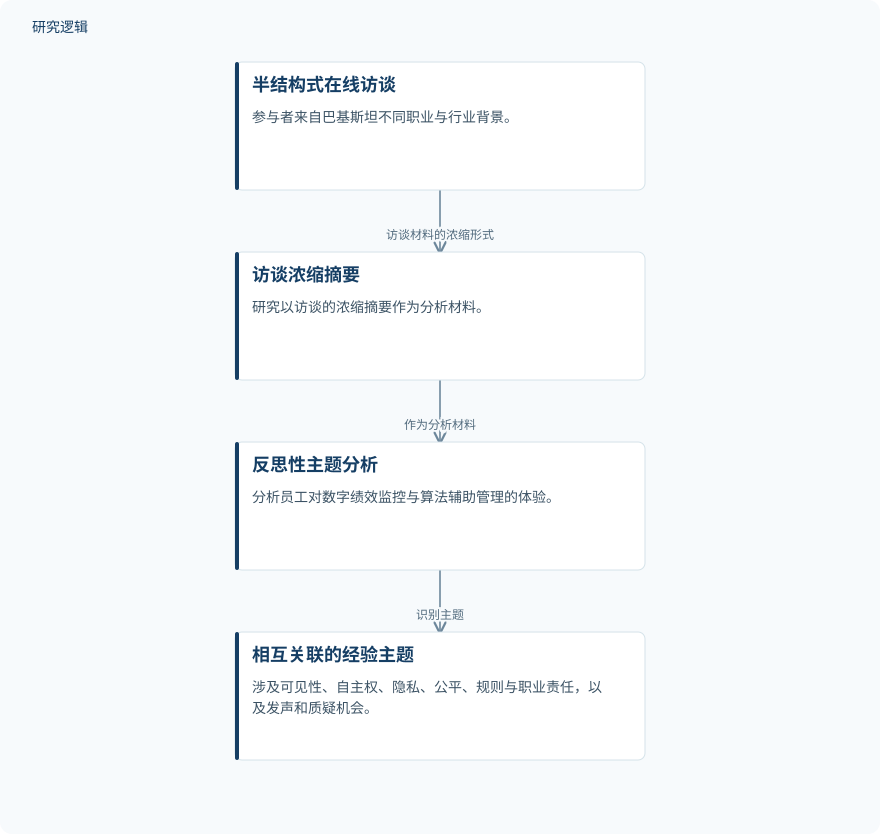

摘要解读
算法管理的人性面向：员工如何协商绩效监测、自主权、隐私与职场信任
The Human Side of Algorithmic Management: Exploring How Employees Negotiate AI-Driven Performance Monitoring, Autonomy, Privacy, and Workplace Trust
解读更新 2026-10-31 09:13 · 依据公开摘要整理，未核验全文细节
数字化绩效监控可以让工作要求更清晰，但员工是否仍有自主空间、隐私边界和申诉机会？这项来自巴基斯坦职场的探索性质性研究，将阅读重点放在一个关键区别上：主管的理解与支持，并不等于组织提供了可靠的制度保障。
文章目录
绩效被看见之后，员工如何保留自主权
研究关注巴基斯坦不同职业和行业背景下，员工如何体验并协商数字绩效监控与算法辅助管理。问题不只是员工是否接受监控，还包括他们如何理解自主权、隐私、公平与职场信任，以及能否对评估表达异议。
从在线访谈浓缩摘要中识别经验主题
作者采用探索性质性设计，分析材料来自22名参与者的半结构式在线访谈浓缩摘要，并使用反思性主题分析。这里需要保留材料层级的区别：摘要明确说的是访谈的浓缩摘要，不能直接将其表述为对完整访谈逐字稿的分析。
依据摘要整理的访谈分析过程示意


仅概括摘要明确陈述的资料来源与分析关系，不是论文原图，也不补充未报告的访谈或编码配置。
下载 SVG图示关系说明
实线表示相邻阶段的信息流，虚线表示跨阶段联系或反馈。
半结构式在线访谈 → 访谈浓缩摘要：访谈材料的浓缩形式；访谈浓缩摘要 → 反思性主题分析：作为分析材料；反思性主题分析 → 相互关联的经验主题：识别主题
认可监控价值，不意味着接受所有评估方式
分析识别出六个相互关联的主题：协商工作可见性、指标之下的自主权、隐私边界、依赖主管的公平、组织规则与职业责任，以及员工发声和提出质疑的机会。这些主题共同呈现了员工与监控安排之间的协商关系。
参与者总体认可监控在改善协调、明确绩效预期和支持合规方面的益处，同时担忧评估未充分考虑具体情境、监控带来行为压力、数据处理做法不清晰，以及对评估提出异议的机会有限。这些是参与者报告的体验与看法，不应写成监控效果的量化验证。
摘要最突出的发现是：支持性的主管关系与可靠的组织保障需要区分。主管可能解释评估并考虑工作情境，但员工仍需要明确透明的复核权限、得到认可的纠错程序、清晰的隐私边界，以及便于表达关切的渠道。
探索性发现的适用边界仍需进一步阅读
摘要给出了参与者总数及职业、行业背景多样的信息，但未交代招募方式、各类岗位的构成、具体监控系统或访谈摘要的形成过程，因此无法仅据摘要判断样本覆盖和材料保留的充分程度。
摘要也未提供行业之间、不同监控安排之间的比较细节，或制度建议实施后的验证结果。因此，不能据此推断这些体验在更大员工群体中的普遍程度，也不能将提高透明度与问责性的建议写成已证实有效的干预；这不代表论文没有开展相关工作。
阅读启发：解释之外，还要看谁能纠错
阅读启发：进一步阅读时，可关注员工获得主管解释后，是否仍能通过正式渠道要求复核和纠正评估，以及隐私边界如何被具体界定。本文提供的是理解算法管理中员工处境的视角，不是设备故障诊断或预测维护的技术证据，不宜因方向标签而扩大其结论。
以上为本站阅读启发与建议，不是论文已验证的结论。